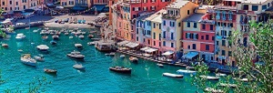

<!DOCTYPE html>
<html lang="pt">
<head>
    <meta charset="UTF-8">
    <title>Local</title>
    <meta name="author" content= "João Santos">
    <meta name="keywords" content="Terrinha,Cidade das bacas">
    <meta name="desciption" content="Descrição sobre a Bacas">
    <link rel="shortcut icon" type="image/x-icon" href="img/favicon.ico">
    <body style="background-color:aliceblue"></body>
</head>
<body>
    <center>
      <h1> Génova</h1>
      
      <br>
      <a href="../index.html">Home |</a>
      <a href="index.html"> Introdução |</a>
      <a href="local.html"> Localização |</a>
      <a href="info.html"> Informação |</a>
      <a href="multimedia.html"> Multimédia</a>
      <hr>
      <h3>Localização</h3> 
  <p><b>Génova</b> é uma cidade italiana localizada na costa norte da Itália. </p>
  <iframe src="https://www.google.com/maps/embed?pb=!1m14!1m12!1m3!1d433404.7827990844!2d9.103348978033708!3d44.46896347440803!2m3!1f0!2f0!3f0!3m2!1i1024!2i768!4f13.1!5e0!3m2!1spt-PT!2spt!4v1614275811699!5m2!1spt-PT!2spt" width="600" height="450" style="border:0;" allowfullscreen="" loading="lazy"></iframe></center>
</body>
</html>